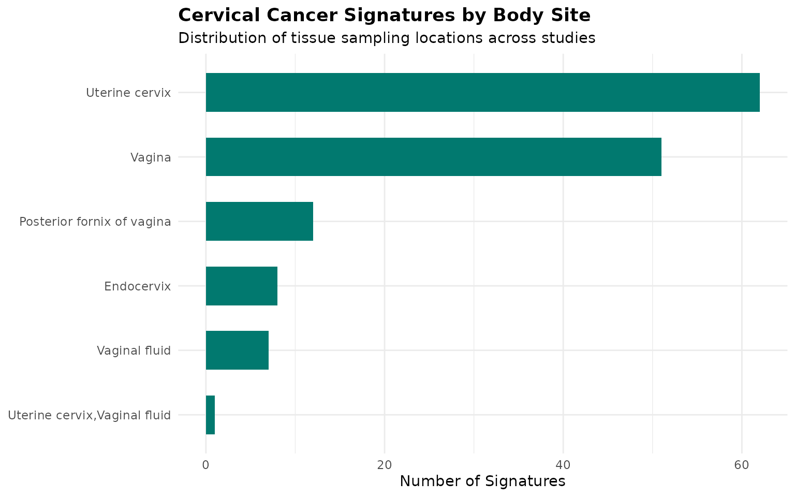
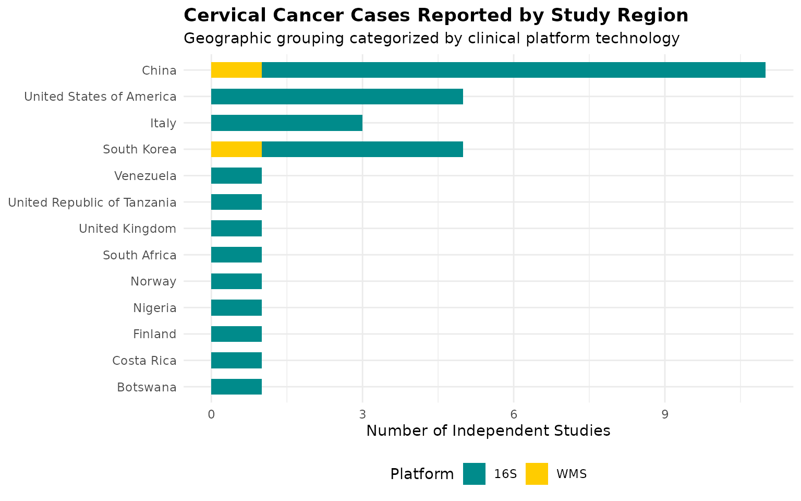
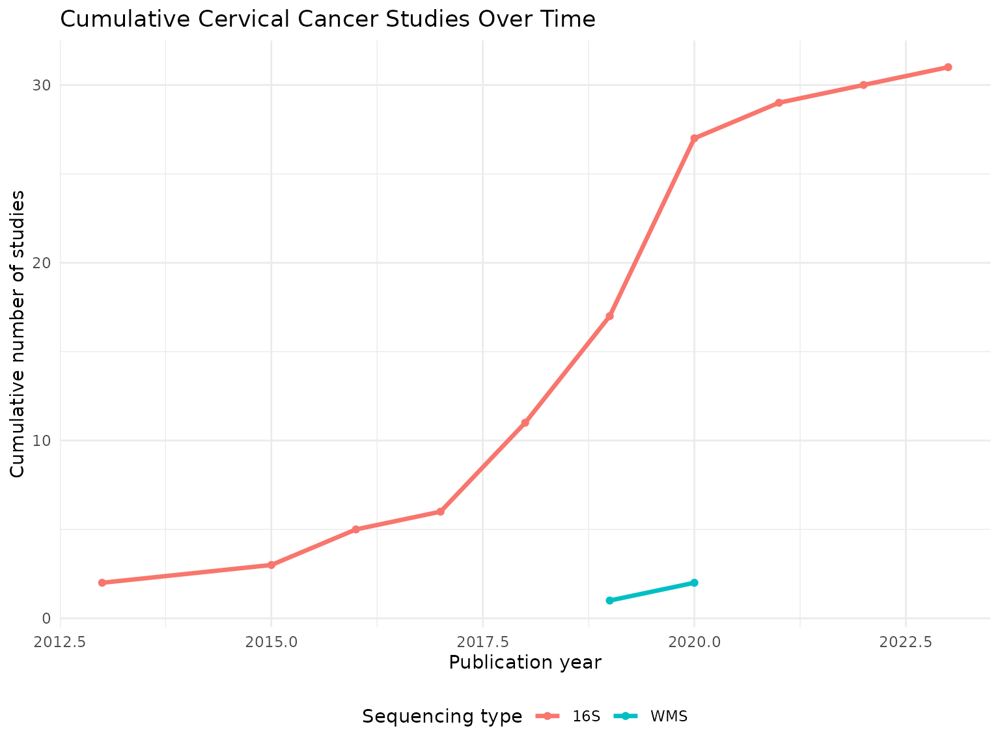
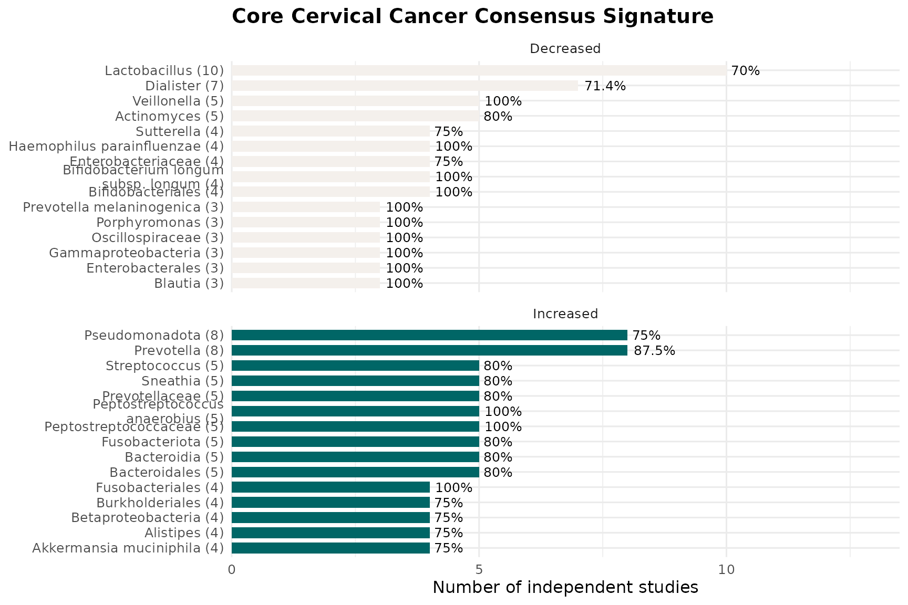
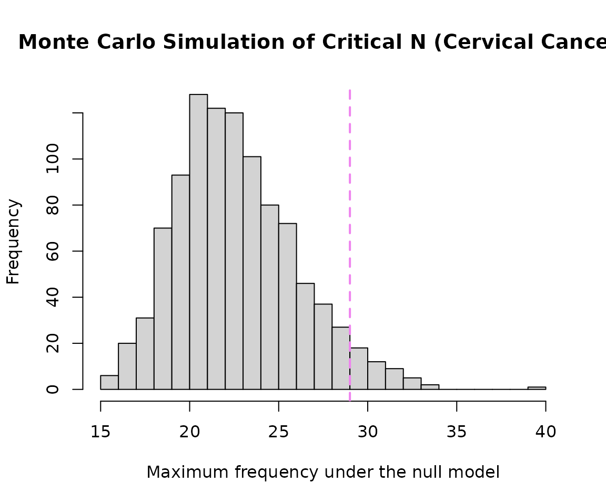
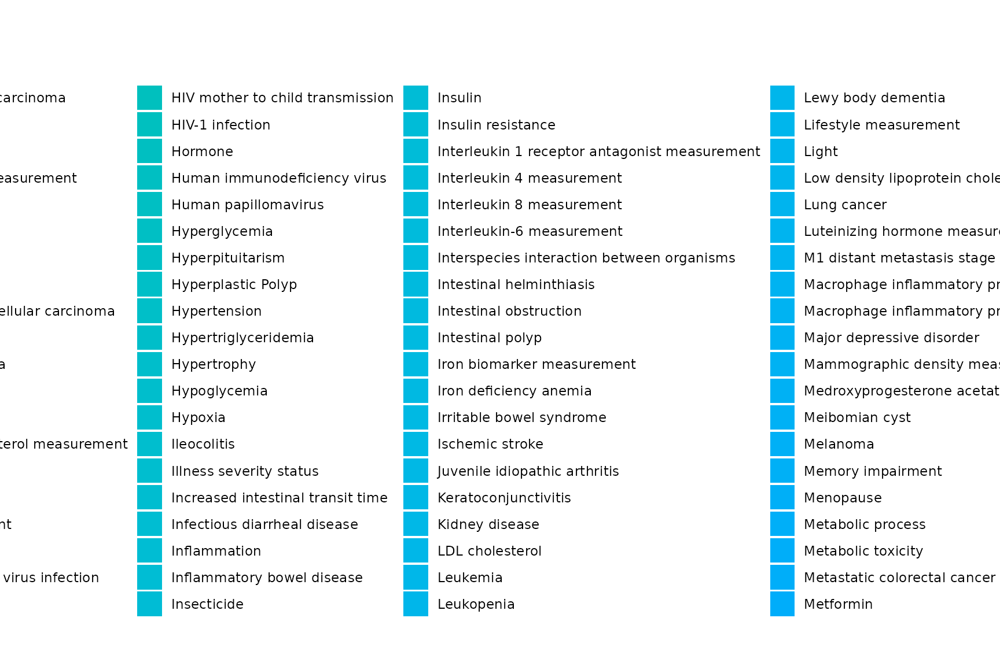
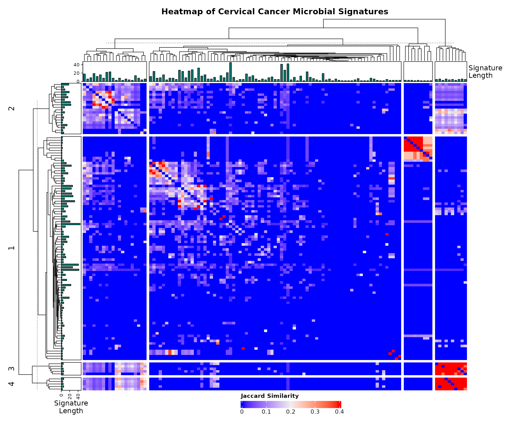

Focused Sub-Analysis of Cervical Cancer Microbial Signatures
Condition-Specific Analysis with Cross-Condition Mapping (BugSigDB)
Sally Karimi Kinyua
Source:vignettes/WomensHealth_CervicalCancer_vignette.Rmd
WomensHealth_CervicalCancer_vignette.RmdIntroduction
This vignette demonstrates a focused sub-analysis of microbial signatures associated specifically with cervical cancer and its precursors (HPV and cervical neoplasia) using BugSigDB. This notebook also evaluates how these specific taxa overlap with other broader women’s health conditions.
Download and Prepare Data
full.dat <- bugsigdbr::importBugSigDB(cache = FALSE)Select Cervical Cancer Specific Signatures
Here we filter exclusively for cervical cancer, cervical intraepithelial neoplasia, and HPV-related conditions. We restrict our data workspace to reproductive tract body sites to strip out unrelated background noise.
cervical_terms <- c(
"Cervical cancer",
"Cervical glandular intraepithelial neoplasia",
"Cervical glandular intraepithelial neoplasia,Cervical cancer",
"Cervical glandular intraepithelial neoplasia,Human papilloma virus infection",
"Cervix erosion",
"Human papilloma virus infection",
"Human papilloma virus infection,Age",
"Human papilloma virus infection,Cervical cancer",
"Human papilloma virus infection,Cervical glandular intraepithelial neoplasia",
"Chlamydophila infectious disease,Human papilloma virus infection"
)
# Filter conditions and ensure relevant reproductive tract body sites
cervical_dat <- dat %>%
filter(Condition %in% cervical_terms) %>%
filter(str_detect(`Body site`, "vagina|Vagina|cervix|Cervix|Endocervix|fornix")) %>%
distinct()
nrow(cervical_dat)## [1] 141| Condition | n |
|---|---|
| Human papilloma virus infection | 67 |
| Cervical glandular intraepithelial neoplasia | 48 |
| Cervical cancer | 12 |
| Cervical glandular intraepithelial neoplasia,Human papilloma virus infection | 6 |
| Cervical glandular intraepithelial neoplasia,Cervical cancer | 2 |
| Cervix erosion | 2 |
| Chlamydophila infectious disease,Human papilloma virus infection | 2 |
| Human papilloma virus infection,Cervical cancer | 2 |
Study Characteristics
| Body site | Sequencing type | n |
|---|---|---|
| Endocervix | 16S | 8 |
| Posterior fornix of vagina | 16S | 12 |
| Uterine cervix | 16S | 58 |
| Uterine cervix | WMS | 4 |
| Uterine cervix,Vaginal fluid | 16S | 1 |
| Vagina | 16S | 51 |
| Vaginal fluid | 16S | 5 |
| Vaginal fluid | WMS | 2 |
| Year | n |
|---|---|
| 2013 | 6 |
| 2015 | 2 |
| 2016 | 8 |
| 2017 | 4 |
| 2018 | 31 |
| 2019 | 34 |
| 2020 | 42 |
| 2021 | 11 |
| 2022 | 1 |
| 2023 | 2 |
Demographic & Anatomy Metrics Visualisations
# Plotting the unique anatomic anatomical tracking points for Cervical Cancer tracking
cervical_dat %>%
count(`Body site`, sort = TRUE) %>%
ggplot(aes(x = reorder(`Body site`, n), y = n)) +
geom_col(fill = "#01796F", width = 0.6) +
coord_flip() +
labs(
title = "Cervical Cancer Signatures by Body Site",
subtitle ="Distribution of tissue sampling locations across studies" ,
x = NULL, y = "Number of Signatures"
) +
theme_minimal(base_size = 11) +
theme(plot.title = element_text(face = "bold"))
Geographical Trends
# Plotting case counts reported across international tracking zones
cervical_dat %>%
distinct(PMID, `Location of subjects`, `Sequencing type`) %>%
count(`Location of subjects`, `Sequencing type`) %>%
filter(!is.na(`Location of subjects`)) %>%
ggplot(aes(x = reorder(`Location of subjects`, n), y = n, fill = `Sequencing type`)) +
geom_col(width = 0.6) +
scale_fill_manual(values = c("16S" = "#008B8B", "WMS" = "#FFCC00")) +
coord_flip() +
labs(
title = "Cervical Cancer Cases Reported by Study Region",
subtitle = "Geographic grouping categorized by clinical platform technology",
x = NULL, y = "Number of Independent Studies", fill = "Platform"
) +
theme_minimal(base_size = 11) +
theme(
plot.title = element_text(face = "bold"),
legend.position = "bottom"
)
Temporal trends plot
cervical_dat %>%
distinct(PMID, Year, `Sequencing type`) %>%
filter(!is.na(Year)) %>%
count(Year, `Sequencing type`) %>%
group_by(`Sequencing type`) %>%
arrange(Year) %>%
mutate(cumulative_n = cumsum(n)) %>%
ungroup() %>%
ggplot(aes(x = Year, y = cumulative_n, color = `Sequencing type`)) +
geom_line(linewidth = 1.2) +
geom_point() +
labs(
title = "Cumulative Cervical Cancer Studies Over Time",
x = "Publication year", y = "Cumulative number of studies", color = "Sequencing type"
) +
theme_minimal(base_size = 11) +
theme(legend.position = "bottom")
Taxonomic Summary
taxa.table <- createTaxonTable(cervical_dat)
knitr::kable(head(taxa.table, 20))| Taxon Name | Taxonomic Level | total_signatures | increased_signatures | decreased_signatures | Binomial Test pval |
|---|---|---|---|---|---|
| Lactobacillus | genus | 26 | 6 | 20 | 0.00940 |
| Sneathia | genus | 19 | 16 | 3 | 0.00440 |
| Gardnerella | genus | 14 | 7 | 7 | 1.00000 |
| Gardnerella vaginalis | species | 14 | 14 | 0 | 0.00012 |
| Lactobacillales | order | 14 | 1 | 13 | 0.00180 |
| Megasphaera | genus | 14 | 12 | 2 | 0.01300 |
| Prevotella | genus | 13 | 11 | 2 | 0.02200 |
| Dialister | genus | 12 | 6 | 6 | 1.00000 |
| Bacilli | class | 11 | 1 | 10 | 0.01200 |
| Lactobacillaceae | family | 11 | 1 | 10 | 0.01200 |
cervical.wms <- cervical_dat %>% filter(`Sequencing type` == "WMS")
cervical.16s <- cervical_dat %>% filter(`Sequencing type` == "16S")
cat("WMS - signatures:", nrow(cervical.wms), "| studies:", n_distinct(cervical.wms$PMID), "\n")## WMS - signatures: 6 | studies: 2
cat("16S - signatures:", nrow(cervical.16s), "| studies:", n_distinct(cervical.16s$PMID), "\n")## 16S - signatures: 135 | studies: 31Long-Format Taxon Table Setup
sigs.cervical <- bugsigdbr::getSignatures(cervical_dat, tax.id.type = "taxname")
# Also pull a broader copy for cross-condition reference background mapping
sigs.all <- bugsigdbr::getSignatures(dat, tax.id.type = "taxname")
taxon.long <- purrr::map_dfr(seq_along(sigs.all), function(i) {
taxa <- sigs.all[[i]]
if (length(taxa) == 0) return(NULL)
tibble::tibble(sig_id = i, taxon = taxa)
}) %>%
left_join(
dat %>%
mutate(sig_id = row_number()) %>%
select(sig_id, PMID, Condition, `Sequencing type`, `Abundance in Group 1`),
by = "sig_id"
) %>%
rename(direction = `Abundance in Group 1`)
# --- ADD THESE LINES TO CREATE A VISIBLE PREVIEW ---
cat("Long-format table successfully built with", nrow(taxon.long), "rows.\n")## Long-format table successfully built with 58971 rows.
# Display the first 6 rows of your processed data frame as a styled report table
knitr::kable(head(taxon.long), caption = "Preview of the Structured Long-Format Taxon Table")| sig_id | taxon | PMID | Condition | Sequencing type | direction |
|---|---|---|---|---|---|
| 1 | Acinetobacter johnsonii | NA | Obesity | WMS | increased |
| 1 | Anaerostipes | NA | Obesity | WMS | increased |
| 1 | Anaerostipes caccae | NA | Obesity | WMS | increased |
| 1 | Brachyspira hyodysenteriae | NA | Obesity | WMS | increased |
| 1 | Coprococcus | NA | Obesity | WMS | increased |
| 1 | Allocoprococcus comes | NA | Obesity | WMS | increased |
Core Consensus Signature
concordance <- taxon.long %>%
filter(Condition %in% cervical_terms) %>%
distinct(PMID, taxon, direction) %>%
group_by(taxon) %>%
summarise(
n_studies = n_distinct(PMID),
n_increased = sum(direction == "increased"),
n_decreased = sum(direction == "decreased"),
concordance_pct = round(max(n_increased, n_decreased) / n_studies * 100, 1),
majority_dir = if_else(n_increased >= n_decreased, "increased", "decreased"),
.groups = "drop"
) %>%
arrange(desc(n_studies), desc(concordance_pct))
core.sig <- concordance %>%
filter(n_studies >= 2, concordance_pct >= 70) %>%
arrange(majority_dir, desc(n_studies))
knitr::kable(core.sig)| taxon | n_studies | n_increased | n_decreased | concordance_pct | majority_dir |
|---|---|---|---|---|---|
| Lactobacillus | 10 | 5 | 7 | 70.0 | decreased |
| Dialister | 7 | 3 | 5 | 71.4 | decreased |
| Veillonella | 5 | 1 | 5 | 100.0 | decreased |
| Actinomyces | 5 | 1 | 4 | 80.0 | decreased |
| Bifidobacteriales | 4 | 1 | 4 | 100.0 | decreased |
| Bifidobacterium longum subsp. longum | 4 | 0 | 4 | 100.0 | decreased |
| Haemophilus parainfluenzae | 4 | 1 | 4 | 100.0 | decreased |
| Enterobacteriaceae | 4 | 2 | 3 | 75.0 | decreased |
| Sutterella | 4 | 1 | 3 | 75.0 | decreased |
| Blautia | 3 | 0 | 3 | 100.0 | decreased |
| Enterobacterales | 3 | 1 | 3 | 100.0 | decreased |
| Gammaproteobacteria | 3 | 1 | 3 | 100.0 | decreased |
| Oscillospiraceae | 3 | 0 | 3 | 100.0 | decreased |
| Porphyromonas | 3 | 2 | 3 | 100.0 | decreased |
| Prevotella melaninogenica | 3 | 0 | 3 | 100.0 | decreased |
| Streptococcus parasanguinis | 3 | 1 | 3 | 100.0 | decreased |
| Bifidobacterium pseudocatenulatum | 2 | 0 | 2 | 100.0 | decreased |
| Collinsella aerofaciens | 2 | 0 | 2 | 100.0 | decreased |
| Eggerthella | 2 | 0 | 2 | 100.0 | decreased |
| Escherichia | 2 | 1 | 2 | 100.0 | decreased |
| Mobiluncus mulieris | 2 | 1 | 2 | 100.0 | decreased |
| Porphyromonas endodontalis | 2 | 0 | 2 | 100.0 | decreased |
| Prevotella amnii | 2 | 1 | 2 | 100.0 | decreased |
| Roseburia intestinalis | 2 | 0 | 2 | 100.0 | decreased |
| Ruminococcus sp. 5_1_39BFAA | 2 | 0 | 2 | 100.0 | decreased |
| Schaalia odontolytica | 2 | 0 | 2 | 100.0 | decreased |
| Shigella | 2 | 1 | 2 | 100.0 | decreased |
| Shuttleworthella | 2 | 1 | 2 | 100.0 | decreased |
| Spirochaetota | 2 | 0 | 2 | 100.0 | decreased |
| Streptococcaceae | 2 | 1 | 2 | 100.0 | decreased |
| Streptococcus agalactiae | 2 | 1 | 2 | 100.0 | decreased |
| Tyzzerella | 2 | 0 | 2 | 100.0 | decreased |
| Ureaplasma | 2 | 0 | 2 | 100.0 | decreased |
| Veillonella montpellierensis | 2 | 1 | 2 | 100.0 | decreased |
| Veillonellaceae | 2 | 0 | 2 | 100.0 | decreased |
| Prevotella | 8 | 7 | 5 | 87.5 | increased |
| Pseudomonadota | 8 | 6 | 2 | 75.0 | increased |
| Peptostreptococcaceae | 5 | 5 | 0 | 100.0 | increased |
| Peptostreptococcus anaerobius | 5 | 5 | 0 | 100.0 | increased |
| Bacteroidales | 5 | 4 | 2 | 80.0 | increased |
| Bacteroidia | 5 | 4 | 2 | 80.0 | increased |
| Fusobacteriota | 5 | 4 | 2 | 80.0 | increased |
| Prevotellaceae | 5 | 4 | 1 | 80.0 | increased |
| Sneathia | 5 | 4 | 2 | 80.0 | increased |
| Streptococcus | 5 | 4 | 3 | 80.0 | increased |
| Fusobacteriales | 4 | 4 | 0 | 100.0 | increased |
| Akkermansia muciniphila | 4 | 3 | 2 | 75.0 | increased |
| Alistipes | 4 | 3 | 1 | 75.0 | increased |
| Betaproteobacteria | 4 | 3 | 1 | 75.0 | increased |
| Burkholderiales | 4 | 3 | 1 | 75.0 | increased |
| Clostridia | 4 | 3 | 1 | 75.0 | increased |
| Escherichia coli | 4 | 3 | 1 | 75.0 | increased |
| Gemella | 4 | 3 | 1 | 75.0 | increased |
| Lactobacillaceae | 4 | 3 | 2 | 75.0 | increased |
| Mediterraneibacter torques | 4 | 3 | 2 | 75.0 | increased |
| Pasteurellaceae | 4 | 3 | 2 | 75.0 | increased |
| Segatella copri | 4 | 3 | 1 | 75.0 | increased |
| Veillonella parvula | 4 | 3 | 2 | 75.0 | increased |
| Acinetobacter | 3 | 3 | 0 | 100.0 | increased |
| Atopobium | 3 | 3 | 2 | 100.0 | increased |
| Caldimonas | 3 | 3 | 0 | 100.0 | increased |
| Coprococcus | 3 | 3 | 0 | 100.0 | increased |
| Enterocloster bolteae | 3 | 3 | 0 | 100.0 | increased |
| Aggregatibacter | 2 | 2 | 0 | 100.0 | increased |
| Anaerococcus | 2 | 2 | 1 | 100.0 | increased |
| Bacteroidaceae | 2 | 2 | 0 | 100.0 | increased |
| Bacteroides caccae | 2 | 2 | 0 | 100.0 | increased |
| Bacteroides intestinalis | 2 | 2 | 0 | 100.0 | increased |
| Campylobacter gracilis | 2 | 2 | 0 | 100.0 | increased |
| Cardiobacterium | 2 | 2 | 0 | 100.0 | increased |
| Citrobacter | 2 | 2 | 0 | 100.0 | increased |
| Eikenella corrodens | 2 | 2 | 0 | 100.0 | increased |
| Enterobacter cloacae | 2 | 2 | 0 | 100.0 | increased |
| Fusobacteriaceae | 2 | 2 | 0 | 100.0 | increased |
| Gardnerella vaginalis | 2 | 2 | 0 | 100.0 | increased |
| Granulicatella | 2 | 2 | 0 | 100.0 | increased |
| Granulicatella elegans | 2 | 2 | 0 | 100.0 | increased |
| Haemophilus influenzae | 2 | 2 | 0 | 100.0 | increased |
| Klebsiella | 2 | 2 | 0 | 100.0 | increased |
| Ligilactobacillus salivarius | 2 | 2 | 1 | 100.0 | increased |
| Lysobacteraceae | 2 | 2 | 0 | 100.0 | increased |
| Moryella | 2 | 2 | 1 | 100.0 | increased |
| Mycoplasmataceae | 2 | 2 | 0 | 100.0 | increased |
| Neisseria oralis | 2 | 2 | 0 | 100.0 | increased |
| Neisseria subflava | 2 | 2 | 1 | 100.0 | increased |
| Neisseriaceae | 2 | 2 | 0 | 100.0 | increased |
| Oscillospira | 2 | 2 | 0 | 100.0 | increased |
| Parvimonas micra | 2 | 2 | 0 | 100.0 | increased |
| Peptostreptococcus stomatis | 2 | 2 | 0 | 100.0 | increased |
| Phocaeicola plebeius | 2 | 2 | 0 | 100.0 | increased |
| Prevotella bivia | 2 | 2 | 1 | 100.0 | increased |
| Rhizobiaceae | 2 | 2 | 0 | 100.0 | increased |
| Ruminococcus | 2 | 2 | 0 | 100.0 | increased |
| Selenomonas sputigena | 2 | 2 | 0 | 100.0 | increased |
| Sneathia sanguinegens | 2 | 2 | 1 | 100.0 | increased |
| Sneathia sp. | 2 | 2 | 0 | 100.0 | increased |
| Stenotrophomonas | 2 | 2 | 0 | 100.0 | increased |
| Streptococcus constellatus | 2 | 2 | 0 | 100.0 | increased |
| Streptococcus vestibularis | 2 | 2 | 0 | 100.0 | increased |
| Tannerella | 2 | 2 | 0 | 100.0 | increased |
| [Eubacterium] infirmum | 2 | 2 | 0 | 100.0 | increased |
Taxon Frequency Across Studies
taxon.freq <- taxon.long %>%
filter(Condition %in% cervical_terms) %>%
distinct(PMID, taxon, direction) %>%
count(taxon, direction, name = "n_studies") %>%
group_by(taxon) %>%
mutate(total_studies = sum(n_studies)) %>%
ungroup() %>%
arrange(desc(total_studies))
n_distinct(taxon.freq$taxon)## [1] 774
taxon.freq %>%
distinct(taxon, total_studies) %>%
slice_max(total_studies, n = 15) %>%
knitr::kable()| taxon | total_studies |
|---|---|
| Lactobacillus | 12 |
| Prevotella | 12 |
| Bacillota | 11 |
| Bifidobacterium | 10 |
| Actinomycetota | 9 |
| Bacteroidota | 8 |
| Dialister | 8 |
| Pseudomonadota | 8 |
| Bifidobacteriaceae | 7 |
| Lactobacillales | 7 |
| Megasphaera | 7 |
| Streptococcus | 7 |
| Bacteroidales | 6 |
| Bacteroides | 6 |
| Bacteroides uniformis | 6 |
| Bacteroidia | 6 |
| Corynebacterium | 6 |
| Enterobacter | 6 |
| Enterococcus | 6 |
| Eubacteriales | 6 |
| Faecalibacterium | 6 |
| Fusobacteriota | 6 |
| Parabacteroides | 6 |
| Sneathia | 6 |
| Veillonella | 6 |
Core Signature Visualisation
if(nrow(core.sig) > 0) {
core.sig %>%
group_by(majority_dir) %>%
slice_max(n_studies, n = 15, with_ties = FALSE) %>%
ungroup() %>%
mutate(
direction_label = if_else(majority_dir == "increased", "Increased", "Decreased"),
taxon_label = paste0(str_wrap(taxon, width = 28), " (", n_studies, ")")
) %>%
ggplot(aes(x = reorder(taxon_label, n_studies), y = n_studies, fill = direction_label)) +
geom_col(width = 0.7) +
geom_text(aes(label = paste0(concordance_pct, "%")), hjust = -0.15, size = 3.3) +
coord_flip(clip = "off") +
facet_wrap(~direction_label, scales = "free_y", ncol = 1) +
scale_fill_manual(values = c("Increased" = "#006666", "Decreased" = "#F4F0EC")) +
scale_y_continuous(expand = expansion(mult = c(0, 0.35))) +
labs(
title = "Core Cervical Cancer Consensus Signature",
x = NULL, y = "Number of independent studies", fill = NULL
) +
theme_minimal(base_size = 12) +
theme(legend.position = "none", plot.title = element_text(face = "bold"))
}
WMS vs. 16S concordance
dir.by.platform <- taxon.long %>%
filter(Condition %in% cervical_terms) %>%
filter(`Sequencing type` %in% c("WMS", "16S")) %>%
distinct(PMID, taxon, direction, `Sequencing type`) %>%
count(taxon, `Sequencing type`, direction, name = "n_studies") %>%
group_by(taxon, `Sequencing type`) %>%
slice_max(n_studies, n = 1, with_ties = FALSE) %>%
ungroup() %>%
select(taxon, `Sequencing type`, majority_dir = direction)
platform.compare <- dir.by.platform %>%
pivot_wider(names_from = `Sequencing type`, values_from = majority_dir) %>%
filter(!is.na(WMS), !is.na(`16S`)) %>%
rename(dir_WMS = WMS, dir_16S = `16S`) %>%
mutate(agree = dir_WMS == dir_16S)
nrow(platform.compare)## [1] 29
if (nrow(platform.compare) > 0) {
sum(platform.compare$agree)
round(100 * mean(platform.compare$agree), 1)
knitr::kable(platform.compare)
} else {
cat("No taxa reported by both WMS and 16S in this cervical-restricted dataset.")
}| taxon | dir_16S | dir_WMS | agree |
|---|---|---|---|
| Actinomyces | decreased | decreased | TRUE |
| Actinomycetes | decreased | decreased | TRUE |
| Actinomycetota | increased | decreased | FALSE |
| Aerococcus | decreased | decreased | TRUE |
| Arcanobacterium | decreased | decreased | TRUE |
| Bacillota | increased | decreased | FALSE |
| Bacteroidota | decreased | increased | FALSE |
| Bifidobacteriaceae | decreased | decreased | TRUE |
| Bifidobacteriales | decreased | decreased | TRUE |
| Bifidobacterium | decreased | decreased | TRUE |
| Bifidobacterium longum subsp. longum | decreased | decreased | TRUE |
| Campylobacter | increased | decreased | FALSE |
| Clostridia | increased | increased | TRUE |
| Corynebacterium | decreased | decreased | TRUE |
| Enterobacter | increased | decreased | FALSE |
| Enterococcus faecium | increased | decreased | FALSE |
| Erwinia | decreased | increased | FALSE |
| Eubacteriales | increased | increased | TRUE |
| Neisseria | decreased | increased | FALSE |
| Pseudomonadota | increased | decreased | FALSE |
| Pseudomonas | decreased | increased | FALSE |
| Pseudomonas aeruginosa | decreased | increased | FALSE |
| Pseudomonas viridiflava | decreased | increased | FALSE |
| Roseburia | decreased | increased | FALSE |
| Spirochaetota | decreased | decreased | TRUE |
| Staphylococcus haemolyticus | increased | decreased | FALSE |
| Streptococcus cristatus | increased | decreased | FALSE |
| Streptococcus salivarius | decreased | increased | FALSE |
| Veillonella parvula | decreased | increased | FALSE |
Taxon enrichment analysis
n.universe <- n_distinct(taxon.long %>% filter(Condition %in% cervical_terms) %>% pull(taxon))
n.sigs <- length(sigs.cervical)
enrichment.df <- taxon.freq %>%
distinct(taxon, total_studies) %>%
mutate(
observed = total_studies,
expected = n.sigs / n.universe,
enrichment_ratio = observed / expected,
log2_enrichment = log2(enrichment_ratio),
p_value = purrr::map_dbl(observed, ~ binom.test(
x = .x, n = n.sigs, p = 1 / n.universe, alternative = "greater"
)$p.value),
p_adj = p.adjust(p_value, method = "BH")
) %>%
arrange(p_adj, desc(log2_enrichment))
sum(enrichment.df$p_adj < 0.05)## [1] 246| taxon | total_studies | observed | expected | enrichment_ratio | log2_enrichment | p_value | p_adj |
|---|---|---|---|---|---|---|---|
| Lactobacillus | 12 | 12 | 0.1821705 | 65.87234 | 6.041601 | 0 | 0.0e+00 |
| Prevotella | 12 | 12 | 0.1821705 | 65.87234 | 6.041601 | 0 | 0.0e+00 |
| Bacillota | 11 | 11 | 0.1821705 | 60.38298 | 5.916070 | 0 | 0.0e+00 |
| Bifidobacterium | 10 | 10 | 0.1821705 | 54.89362 | 5.778567 | 0 | 0.0e+00 |
| Actinomycetota | 9 | 9 | 0.1821705 | 49.40426 | 5.626563 | 0 | 0.0e+00 |
| Bacteroidota | 8 | 8 | 0.1821705 | 43.91489 | 5.456638 | 0 | 0.0e+00 |
| Dialister | 8 | 8 | 0.1821705 | 43.91489 | 5.456638 | 0 | 0.0e+00 |
| Pseudomonadota | 8 | 8 | 0.1821705 | 43.91489 | 5.456638 | 0 | 0.0e+00 |
| Bifidobacteriaceae | 7 | 7 | 0.1821705 | 38.42553 | 5.263993 | 0 | 1.0e-07 |
| Lactobacillales | 7 | 7 | 0.1821705 | 38.42553 | 5.263993 | 0 | 1.0e-07 |
| Megasphaera | 7 | 7 | 0.1821705 | 38.42553 | 5.263993 | 0 | 1.0e-07 |
| Streptococcus | 7 | 7 | 0.1821705 | 38.42553 | 5.263993 | 0 | 1.0e-07 |
| Bacteroidales | 6 | 6 | 0.1821705 | 32.93617 | 5.041601 | 0 | 1.2e-06 |
| Bacteroides | 6 | 6 | 0.1821705 | 32.93617 | 5.041601 | 0 | 1.2e-06 |
| Bacteroides uniformis | 6 | 6 | 0.1821705 | 32.93617 | 5.041601 | 0 | 1.2e-06 |
Monte Carlo critical N
siglengths <- lengths(cervical_dat$`MetaPhlAn taxon names`)
criticalN <- getCriticalN(
relevant.sigs = cervical_dat$`MetaPhlAn taxon names`,
siglengths = siglengths
)
criticalN## $critical_n
## 95%
## 29
##
## $ci_lower
## 2.5%
## 29
##
## $ci_upper
## 97.5%
## 30
##
## $simulated_values
## [1] 24 22 18 24 20 23 27 26 19 27 25 19 21 20 25 21 21 29 22 28 19 21 27 20
## [25] 21 25 30 27 24 20 25 24 23 20 23 17 20 21 27 23 17 24 24 22 20 25 21 21
## [49] 21 22 24 21 25 21 19 29 25 22 19 23 19 26 23 21 25 24 23 31 28 21 19 20
## [73] 21 21 25 20 21 28 28 21 21 24 21 19 21 21 24 23 17 22 24 18 26 32 23 23
## [97] 24 25 23 25 32 25 23 26 20 20 25 25 21 27 26 26 21 21 26 24 21 23 30 17
## [121] 21 26 31 29 18 19 22 22 24 20 24 21 26 33 28 26 21 26 19 23 24 21 25 24
## [145] 22 32 27 17 25 21 21 24 22 23 19 32 24 20 25 24 25 30 23 18 22 23 25 22
## [169] 23 21 24 18 24 23 19 27 21 21 22 20 25 21 22 20 25 25 24 22 27 24 23 26
## [193] 19 22 22 16 27 28 24 23 23 19 22 24 19 24 22 26 22 22 22 23 22 29 29 20
## [217] 26 23 29 28 21 18 19 30 20 31 26 22 25 22 29 20 20 18 24 19 23 24 26 30
## [241] 22 24 25 22 25 20 17 25 20 23 23 19 26 17 23 21 30 27 25 21 26 22 24 25
## [265] 19 21 27 28 27 23 25 24 23 27 20 27 20 29 20 27 20 22 26 26 29 18 28 22
## [289] 26 25 21 21 28 23 28 31 21 21 25 21 19 25 23 22 20 22 21 26 17 26 20 20
## [313] 18 21 28 23 26 21 21 27 21 22 23 23 26 24 24 22 22 23 30 23 23 20 23 22
## [337] 22 25 28 21 26 30 24 23 21 22 22 21 24 23 22 33 22 25 23 21 20 27 19 22
## [361] 21 24 23 22 20 19 23 29 24 25 25 29 26 25 28 26 22 24 25 22 19 19 23 23
## [385] 24 24 22 23 20 19 21 19 26 20 21 24 24 26 22 22 22 19 19 26 28 22 26 17
## [409] 26 25 25 31 18 21 28 25 28 25 24 25 21 26 21 24 27 23 17 30 22 24 22 26
## [433] 26 26 30 29 22 28 21 24 21 26 15 23 24 23 17 20 28 29 26 32 20 22 22 17
## [457] 26 23 29 25 25 22 22 22 23 23 27 19 24 23 20 19 23 33 21 33 22 25 19 19
## [481] 24 25 27 21 22 21 21 17 20 24 26 26 19 24 30 20 23 16 27 24 20 23 18 20
## [505] 22 22 22 28 18 28 22 19 30 25 21 22 22 21 21 20 21 23 23 24 22 28 23 20
## [529] 26 23 23 23 20 19 26 23 21 27 23 19 22 23 25 22 26 20 18 18 19 19 19 24
## [553] 24 20 19 25 25 24 24 22 22 29 27 21 31 24 21 21 24 27 25 26 20 27 22 29
## [577] 18 19 32 20 19 25 20 21 23 24 24 21 26 20 25 22 24 23 20 23 19 18 26 18
## [601] 17 31 28 31 23 28 20 21 24 20 26 23 22 21 23 23 23 26 29 26 32 18 25 24
## [625] 19 23 34 20 23 22 26 25 24 23 27 21 32 28 22 18 19 21 21 22 20 22 25 23
## [649] 19 23 22 19 20 25 27 21 21 23 31 22 22 25 29 20 26 19 24 24 25 28 26 24
## [673] 22 25 17 24 16 24 19 18 23 29 23 23 19 23 28 24 25 22 22 24 25 23 19 21
## [697] 28 24 26 24 22 19 23 18 23 20 25 21 23 24 19 21 28 22 22 26 20 21 27 20
## [721] 16 23 22 31 28 27 24 29 21 24 26 29 17 27 20 25 24 26 26 20 19 27 21 20
## [745] 21 30 27 23 21 22 24 20 20 25 21 32 24 20 19 28 21 20 27 20 17 24 26 24
## [769] 17 31 23 24 21 21 26 19 20 20 22 22 21 25 21 27 23 21 24 27 22 19 23 20
## [793] 19 20 21 25 20 21 27 28 19 26 23 21 16 21 23 23 21 24 23 20 30 21 40 21
## [817] 21 25 27 18 22 25 23 22 21 26 20 21 27 21 25 22 25 20 21 23 26 22 34 21
## [841] 18 24 20 22 21 20 20 23 21 21 25 23 29 26 30 25 23 19 20 23 24 25 22 21
## [865] 29 20 31 18 19 22 24 23 23 21 24 17 21 26 25 29 24 23 23 25 24 25 28 20
## [889] 25 21 21 27 18 23 26 23 27 23 24 20 22 24 27 20 26 22 22 24 18 27 30 21
## [913] 29 29 20 23 18 22 21 22 22 19 23 22 28 22 21 22 27 21 22 23 22 25 20 22
## [937] 21 24 18 24 20 23 18 24 22 26 23 20 20 24 22 19 21 26 19 27 22 28 23 28
## [961] 23 18 22 19 29 30 22 22 27 26 26 21 21 24 19 21 30 23 19 19 22 20 20 19
## [985] 28 22 22 22 17 24 20 33 18 20 23 21 20 19 22 23
##
## $alpha
## [1] 0.05
##
## $quantile_label
## [1] "95th percentile"Plot
hist(
criticalN$simulated_values,
breaks = 30,
main = "Monte Carlo Simulation of Critical N (Cervical Cancer)",
xlab = "Maximum frequency under the null model"
)
abline(
v = criticalN$critical_n,
col = "violet",
lwd = 2,
lty = 2
)
Cross-Condition Taxa Overlap Analysis
This section explores whether the taxa altered in cervical cancer settings are unique to malignant cervical environments or represent shared dysbiosis tracking markers across other women’s health conditions.
# 1. Identify all unique taxa present in our targeted cervical cancer dataset signatures
cervical_taxa <- taxon.long %>%
filter(Condition %in% cervical_terms) %>%
distinct(taxon) %>%
pull(taxon)
# 2. Count distinct conditions linked to these specific microbes
shared_taxa_counts <- taxon.long %>%
filter(taxon %in% cervical_taxa) %>%
group_by(taxon) %>%
summarise(
total_womens_health_studies = n_distinct(PMID),
distinct_conditions_linked = n_distinct(Condition),
top_other_conditions = paste(
head(setdiff(unique(Condition), cervical_terms), 3),
collapse = ", "
),
.groups = "drop"
) %>%
arrange(desc(distinct_conditions_linked))
# Display top 20 multi-condition overlapping taxa
shared_taxa_counts %>%
slice_max(distinct_conditions_linked, n = 20, with_ties = FALSE) %>%
knitr::kable(
caption = "Top Cervical-Associated Taxa and Their Links to Other Women's Health Conditions",
col.names = c("Taxon Name", "Total WH Studies", "Total Distinct Conditions", "Other Conditions it Often Appears In")
)| Taxon Name | Total WH Studies | Total Distinct Conditions | Other Conditions it Often Appears In |
|---|---|---|---|
| Streptococcus | 347 | 214 | Granulomatosis with Polyangiitis, Diet, Autism |
| Prevotella | 354 | 211 | Illness severity status, Antimicrobial agent, Obesity |
| Lactobacillus | 335 | 201 | Antimicrobial agent, Oxygen, Illness severity status |
| Bacteroides | 345 | 199 | Autism, Autoimmune disease, Obesity |
| Lachnospiraceae | 331 | 199 | Autoimmune disease, Smoking behavior, Irritable bowel syndrome |
| Bacillota | 313 | 190 | Type II diabetes mellitus, Autism, Autoimmune disease |
| Faecalibacterium | 278 | 183 | Obesity, Autoimmune disease, Irritable bowel syndrome |
| Oscillospiraceae | 273 | 183 | Autoimmune disease, Smoking behavior, Colorectal carcinoma |
| Bifidobacterium | 275 | 177 | Food allergy, Irritable bowel syndrome, Autism |
| Clostridium | 258 | 175 | Irritable bowel syndrome, Autism, Autoimmune disease |
| Actinomycetota | 265 | 171 | Autism, Ethnic group,Place of residence measurement, Ulcerative colitis |
| Pseudomonadota | 241 | 166 | Autism, Autoimmune disease, Ethnic group,Place of residence measurement |
| Roseburia | 228 | 165 | Autoimmune disease, Smoking behavior, Irritable bowel syndrome |
| Blautia | 246 | 164 | Autoimmune disease, Irritable bowel syndrome, Colorectal cancer |
| Veillonella | 241 | 161 | Obesity, Antimicrobial agent, Oxygen |
| Bacteroidota | 247 | 158 | Autism, Autoimmune disease, Irritable bowel syndrome |
| Eubacteriales | 219 | 156 | Autoimmune disease, Colorectal carcinoma, Psoriasis |
| Enterobacteriaceae | 213 | 155 | Autoimmune disease, Irritable bowel syndrome, Sampling site |
| Haemophilus | 208 | 153 | Illness severity status, Diet, Autoimmune disease |
| Alistipes | 198 | 148 | Autoimmune disease, Irritable bowel syndrome, Colorectal cancer |
Shared Dysbiosis Visualisation
top_shared_taxa <- shared_taxa_counts %>%
filter(distinct_conditions_linked > 1) %>%
slice_max(total_womens_health_studies, n = 15, with_ties = FALSE) %>%
pull(taxon)
if(length(top_shared_taxa) > 0) {
taxon.long %>%
filter(taxon %in% top_shared_taxa) %>%
mutate(Condition_Group = if_else(Condition %in% cervical_terms, "Cervical/HPV", Condition)) %>%
count(taxon, Condition_Group) %>%
ggplot(aes(x = reorder(taxon, n), y = n, fill = Condition_Group)) +
geom_col() +
coord_flip() +
labs(
title = "Cervical Cancer Taxa Active in Other Conditions",
subtitle = "Tracking where prominent cervical microbes show up elsewhere",
x = NULL, y = "Total Signature Mentions", fill = "Condition Group"
) +
theme_minimal(base_size = 11) +
theme(legend.position = "right")
}
Signature Similarity and Heatmap
allsigs <- bugsigdbr::getSignatures(cervical_dat, tax.id.type = "taxname")
allsigs <- allsigs[sapply(allsigs, length) > 1]
if (length(allsigs) > 1) {
jmat <- BugSigDBStats::calcJaccardSimilarity(allsigs)
siglengths <- sapply(allsigs, length)
# Adjusted size and padding of top bar plots to give the main grid more room
ha <- HeatmapAnnotation(
`Signature\nLength` = anno_barplot(siglengths, gp = gpar(fill = "#01796F"), height = unit(1.2, "cm"))
)
hr <- rowAnnotation(
`Signature\nLength` = anno_barplot(siglengths, gp = gpar(fill = "#01796F"), width = unit(1.2, "cm"))
)
hm <- Heatmap(
jmat,
top_annotation = ha,
left_annotation = hr,
show_row_names = FALSE,
show_column_names = FALSE,
# SPREAD CONTROLS: Breaks the squeezed block into distinct biological sub-clusters
row_km = 4,
column_km = 4,
row_gap = unit(1.5, "mm"),
column_gap = unit(1.5, "mm"),
# DENDROGRAM HEIGHT: Shrinks the tree branches so the main square matrix has more room
row_dend_width = unit(2.5, "cm"),
column_dend_height = unit(2.5, "cm"),
column_title = "Heatmap of Cervical Cancer Microbial Signatures",
column_title_gp = gpar(fontsize = 14, fontface = "bold"),
heatmap_legend_param = list(
title = "Jaccard Similarity",
direction = "horizontal",
legend_width = unit(6, "cm")
)
)
# Draw directly to the R Markdown / HTML output screen with solid margin padding
draw(hm, heatmap_legend_side = "bottom", padding = unit(c(5, 5, 5, 5), "mm"))
# Save a crisp offline image file matching the spacious layout dimensions
png(filename = "CervicalCancer_heatmap.png", width = 12, height = 10, units = "in", res = 300)
draw(hm, heatmap_legend_side = "bottom", padding = unit(c(5, 5, 5, 5), "mm"))
dev.off()
}
## agg_png
## 2Dendrogram
if (exists("jmat") && nrow(jmat) > 1) {
hc <- hclust(as.dist(1 - jmat))
dend <- as.dendrogram(hc)
# Custom margin expansion to handle high vertical density layout
par(mar = c(5, 2, 4, 2))
plot(
dend,
horiz = TRUE,
leaflab = "none",
main = "Hierarchical Cluster Map of Cervical Cancer Microbial Signatures",
xlab = "Distance (1 - Jaccard similarity)",
cex.main = 1.3,
# LINE THICKNESS: Thins down the structural tree paths to avoid bleeding together
lwd = 0.8
)
}```